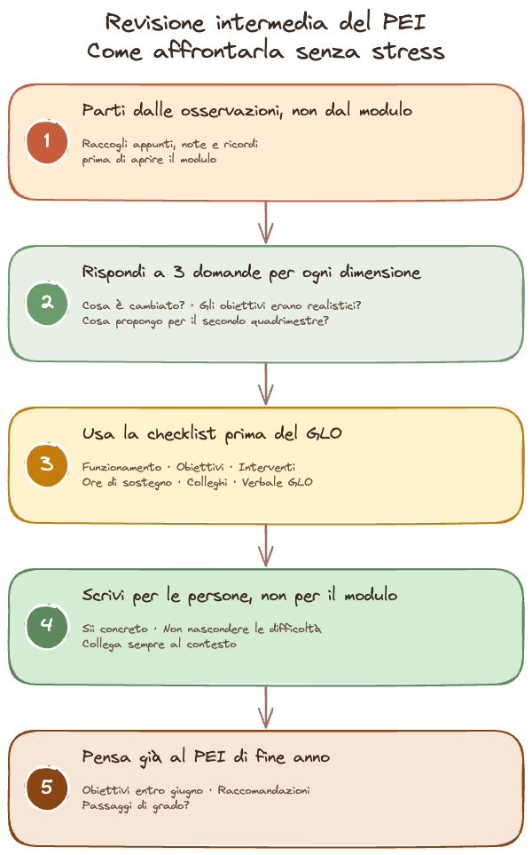

La verifica intermedia del PEI è uno dei momenti più importanti dell'anno scolastico per chi fa sostegno. È il punto in cui ci si ferma, si guarda cosa ha funzionato e cosa no, e si decide come aggiustare il tiro per la seconda metà dell'anno.
Eppure, nonostante la sua importanza, è anche uno dei momenti che genera più ansia. Perché richiede di mettere nero su bianco i progressi (o la mancanza di progressi) dell'alunno, e farlo in un modo che sia onesto, documentato e utile per il GLO.
La buona notizia è che con un po' di organizzazione si può affrontare tutto con molta meno fatica. Ecco come.
1. Parti dalle osservazioni, non dal modulo
L'errore più comune è aprire il PEI di inizio anno e cercare di aggiornarlo dimensione per dimensione, dall'alto in basso. Il risultato è che ci si blocca quasi subito, perché le formulazioni originali sembrano lontane da quello che si è osservato in classe.
Prova al contrario: prendi i tuoi appunti, le osservazioni che hai raccolto durante questi mesi, le annotazioni sul registro, i feedback dei colleghi curricolari. Rileggili con calma. Quello che emerge è il quadro reale, e da lì puoi aggiornare il PEI con coerenza.
Consiglio pratico: se non hai osservazioni scritte in modo sistematico, non preoccuparti. Anche appunti sparsi, note sul telefono o ricordi recenti sono un punto di partenza valido. L'importante è raccoglierli prima di sedersi a scrivere.
2. Per ogni dimensione, rispondi a tre domande
Non serve riscrivere tutto. Per ciascuna delle quattro dimensioni del PEI (socializzazione e interazione, comunicazione e linguaggio, autonomia e orientamento, cognitiva e dell'apprendimento), concentrati su queste tre domande:
- Cosa è cambiato rispetto a settembre? Anche piccoli progressi contano. Anche l'assenza di cambiamento è un dato.
- Gli obiettivi che avevamo fissato erano realistici? Se un obiettivo si è rivelato troppo ambizioso o troppo facile, è il momento di ricalibrarli.
- Cosa propongo per il secondo quadrimestre? Qui si inseriscono le modifiche: nuovi obiettivi, strategie diverse, risorse aggiuntive.
Queste tre domande coprono tutto quello che il GLO ha bisogno di sapere nella verifica intermedia.
3. Usa la checklist per non dimenticare nulla
Prima del GLO di verifica, assicurati di aver coperto tutti i punti. Ecco una checklist da stampare o tenere a portata di mano:
Checklist per la verifica intermedia
- Rileggere il PEI di inizio anno e le osservazioni raccolte
- Aggiornare la descrizione del funzionamento per ogni dimensione
- Verificare il raggiungimento degli obiettivi: raggiunti, parzialmente raggiunti, non raggiunti
- Riformulare o sostituire gli obiettivi non realistici
- Aggiornare gli interventi educativi e le strategie se necessario
- Verificare la coerenza tra le ore di sostegno assegnate e il fabbisogno reale
- Raccogliere il parere dei colleghi curricolari (anche informalmente)
- Preparare una sintesi dei punti principali da presentare al GLO
- Predisporre il verbale del GLO di verifica intermedia
4. Scrivi per le persone, non per il modulo
Un PEI aggiornato bene non è quello che riempie tutte le caselle. È quello che chi lo legge (il collega che arriverà a settembre, il neuropsichiatra, i genitori) riesce a capire cosa succede davvero in classe con quel bambino.
Qualche accorgimento pratico:
- Sii concreto. Invece di "l'alunno ha migliorato le competenze relazionali", scrivi "Marco ora riesce a partecipare al lavoro di coppia senza l'intervento costante dell'insegnante, cosa che a settembre non avveniva".
- Non nascondere le difficoltà. Se un obiettivo non è stato raggiunto, spiegare perché è molto più utile che cercare di mascherarlo. Il GLO serve proprio a questo.
- Collegati al contesto. Le variabili esterne (cambio di insegnante, assenze prolungate, modifiche nella terapia) vanno menzionate perché spiegano il quadro.
5. Pensa già al PEI di fine anno
La verifica intermedia è anche il momento migliore per cominciare a ragionare sul PEI finale. Non serve scriverlo adesso, ma tenere a mente dove stai andando aiuta a rendere la verifica intermedia più coerente.
In particolare, chiediti:
- Quali obiettivi saranno raggiungibili entro giugno?
- Quali raccomandazioni vorrai inserire per l'anno prossimo?
- Ci sono elementi da segnalare in vista di un eventuale passaggio di grado?
Queste riflessioni ora ti risparmieranno molto lavoro a maggio, quando il tempo stringe davvero.

Hai poco tempo per la revisione?
Se vuoi concentrarti sui contenuti educativi e lasciare a qualcun altro la fatica della stesura, posso aiutarti. Mandami i tuoi appunti e ti restituisco il PEI aggiornato entro 48 ore.
Richiedi un documento